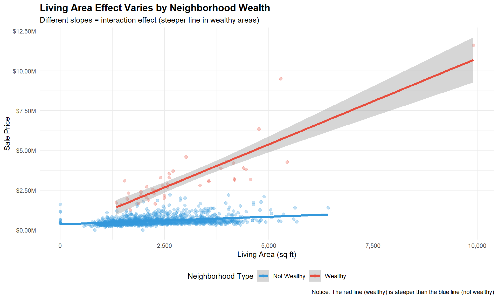
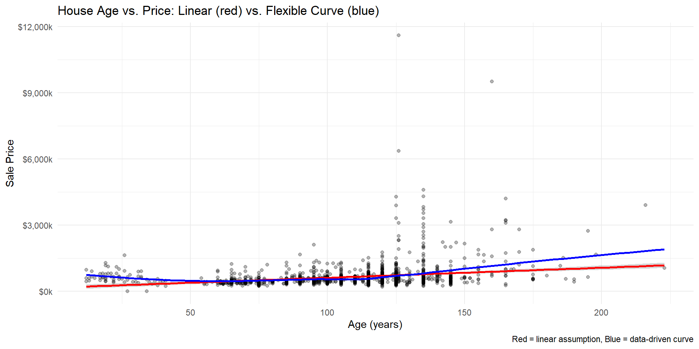
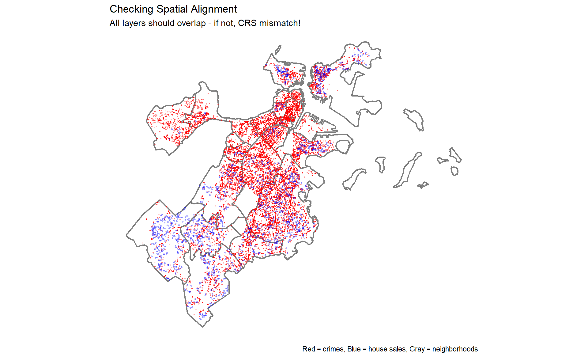
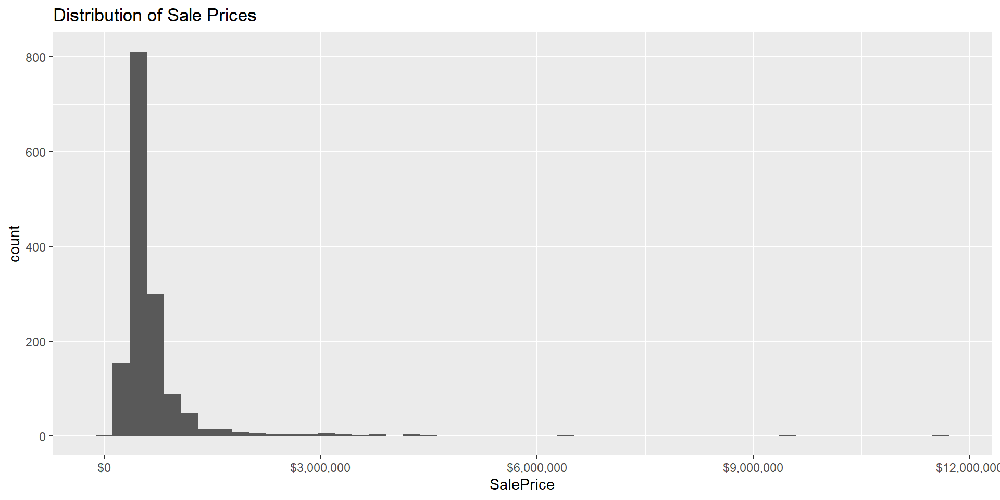
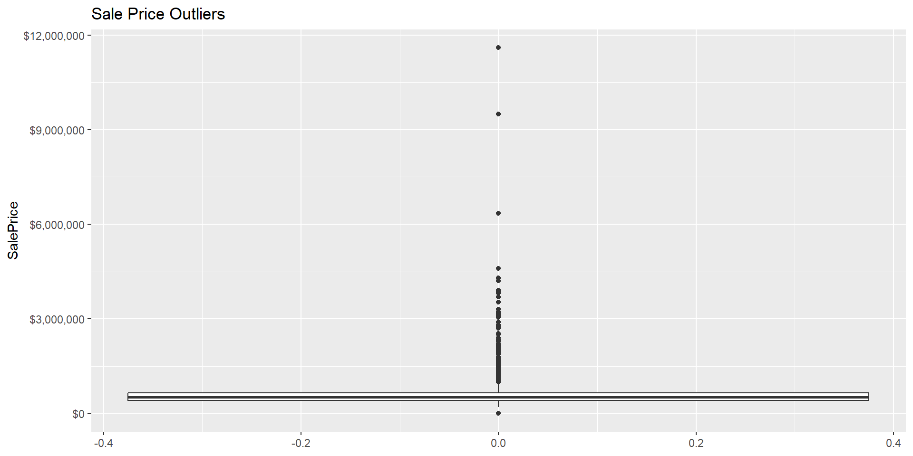

Rows: 1,485
Columns: 24
$ ...1 <dbl> 1, 2, 3, 4, 5, 6, 7, 8, 9, 10, 11, 12, 13, 14, 15, 16, 17, …
$ Parcel_No <dbl> 100032000, 100058000, 100073000, 100112000, 100137000, 1001…
$ SalePrice <dbl> 450000, 600000, 450000, 670000, 260000, 355000, 665000, 355…
$ PricePerSq <dbl> 228.89, 164.34, 105.98, 291.94, 217.21, 190.96, 227.35, 120…
$ LivingArea <dbl> 1966, 3840, 4246, 2295, 1197, 1859, 2925, 2904, 892, 1916, …
$ Style <chr> "Conventional", "Semi?Det", "Decker", "Row\xa0End", "Coloni…
$ GROSS_AREA <dbl> 3111, 5603, 6010, 3482, 1785, 2198, 4341, 3892, 1658, 3318,…
$ NUM_FLOORS <dbl> 2.0, 3.0, 3.0, 3.0, 2.0, 1.5, 3.0, 3.0, 2.0, 2.0, 1.5, 2.0,…
$ R_BDRMS <dbl> 4, 8, 9, 6, 2, 3, 8, 6, 2, 2, 4, 3, 3, 3, 6, 8, 4, 4, 3, 2,…
$ R_FULL_BTH <dbl> 2, 3, 3, 3, 1, 3, 3, 3, 1, 2, 2, 3, 1, 1, 3, 3, 2, 3, 1, 2,…
$ R_HALF_BTH <dbl> 0, 0, 0, 0, 1, 0, 0, 0, 0, 0, 0, 0, 0, 1, 0, 0, 0, 1, 0, 0,…
$ R_KITCH <dbl> 2, 3, 3, 3, 1, 2, 3, 3, 1, 2, 2, 3, 1, 1, 3, 3, 2, 3, 2, 2,…
$ R_AC <chr> "N", "N", "N", "N", "N", "N", "N", "N", "N", "N", "N", "N",…
$ R_FPLACE <dbl> 0, 0, 0, 0, 0, 0, 0, 0, 0, 0, 0, 0, 0, 0, 0, 0, 0, 0, 0, 0,…
$ LU <chr> "R2", "R3", "R3", "R3", "R1", "R2", "R3", "E", "R1", "R2", …
$ OWN_OCC <chr> "Y", "N", "Y", "N", "N", "N", "N", "N", "N", "Y", "N", "N",…
$ R_BLDG_STY <chr> "CV", "SD", "DK", "RE", "CL", "CV", "DK", "DK", "RE", "TF",…
$ R_ROOF_TYP <chr> "H", "F", "F", "F", "F", "G", "F", "F", "G", "F", "G", "F",…
$ R_EXT_FIN <chr> "M", "B", "M", "M", "P", "M", "M", "A", "A", "M", "W", "W",…
$ R_TOTAL_RM <dbl> 10, 17, 20, 14, 5, 8, 14, 14, 4, 9, 7, 7, 5, 5, 15, 14, 11,…
$ R_HEAT_TYP <chr> "W", "W", "W", "W", "E", "E", "W", "W", "W", "W", "W", "W",…
$ YR_BUILT <dbl> 1900, 1910, 1910, 1905, 1860, 1905, 1900, 1890, 1900, 1900,…
$ Latitude <dbl> 42.37963, 42.37877, 42.37940, 42.38014, 42.37967, 42.37953,…
$ Longitude <dbl> -71.03076, -71.02943, -71.02846, -71.02859, -71.02903, -71.…Spatial Machine Learning & Advanced Regression
Week 6: MUSA 5080
Dr. Allison Lassiter
2026-02-20
Today’s Journey
What We’ll Cover
Warm-Up: Build a Baseline Model
- Quick review of Week 5 regression
- Create simple structural model
- Identify its limitations
Part 1: Expanding Your Toolkit
- Categorical variables
- Interactions
- Polynomial terms
Part 2: Why Space Matters
- Hedonic model framework
- Tobler’s First Law
- Spatial autocorrelation
Part 3: Creating Spatial Features
- Buffer aggregation
- k-Nearest Neighbors
- Distance to amenities
Part 4: Fixed Effects
Warm-Up: Build a Baseline Model
Let’s Build Something Simple Together
We’ll start by creating a basic model using only structural features - this will be our baseline to improve upon today.
What Does This Model Tell Us?
Call:
lm(formula = SalePrice ~ LivingArea, data = boston)
Residuals:
Min 1Q Median 3Q Max
-855962 -219491 -68291 55248 9296561
Coefficients:
Estimate Std. Error t value Pr(>|t|)
(Intercept) 157968.32 35855.59 4.406 1.13e-05 ***
LivingArea 216.54 14.47 14.969 < 2e-16 ***
---
Signif. codes: 0 '***' 0.001 '**' 0.01 '*' 0.05 '.' 0.1 ' ' 1
Residual standard error: 563800 on 1483 degrees of freedom
Multiple R-squared: 0.1313, Adjusted R-squared: 0.1307
F-statistic: 224.1 on 1 and 1483 DF, p-value: < 2.2e-16[1] 0.1312636[1] 0.1306778Interpreting Our Baseline
Expected Output:
| Variable | Coefficient | Std. Error | t-value | p-value |
|---|---|---|---|---|
| Intercept | 157968.32 | 35855.59 | 4.406 | <0.001 |
| LivingArea | 216.54 | 14.47 | 14.969 | <0.001 |
What this means:
- Base price (LivingArea = 0 sq ft) ≈ 157968.32
- Each additional square foot adds ~216 to price
- Relationship is statistically significant (p < 0.001)
- R² is 0.13 (13% of variation explained)
The Problem
MOST of the variation in house prices is still unexplained!
What are we missing? 🤔
Limitations of This Model
What’s Missing?
- What does this model ignore?
- Location! (North End vs. Roxbury vs. Back Bay)
- Proximity to downtown, waterfront, parks
- Nearby crime levels
- School quality
- Neighborhood characteristics
- Why might it fail?
- 1,000 sq ft in Back Bay ≠ 1,000 sq ft in Roxbury
- Same house, different locations → vastly different prices
- “Location, location, location!”
- How could we improve it?
- Add spatial features (crime nearby, distance to amenities)
- Control for neighborhood (fixed effects to capture unobserved variation)
- Include interactions (does size matter more in wealthy areas?)
This is exactly where spatial features come in!
Let’s Add One More Feature
Call:
lm(formula = SalePrice ~ LivingArea + R_FULL_BTH, data = boston)
Residuals:
Min 1Q Median 3Q Max
-783019 -230756 -65737 75367 9193133
Coefficients:
Estimate Std. Error t value Pr(>|t|)
(Intercept) 107683.96 37340.88 2.884 0.00399 **
LivingArea 145.68 21.33 6.828 1.25e-11 ***
R_FULL_BTH 106978.13 23800.30 4.495 7.50e-06 ***
---
Signif. codes: 0 '***' 0.001 '**' 0.01 '*' 0.05 '.' 0.1 ' ' 1
Residual standard error: 560200 on 1482 degrees of freedom
Multiple R-squared: 0.1429, Adjusted R-squared: 0.1418
F-statistic: 123.6 on 2 and 1482 DF, p-value: < 2.2e-16Baseline R²: 0.1312636 With bathrooms R²: 0.1429474 R² improves a smidge… but still missing location!
Today’s Goal
By the end of class, you’ll build models that: - Incorporate spatial relationships - Account for neighborhood effects
- Achieve much better prediction accuracy - Help you understand what drives housing prices
Converting to Spatial Data
Step 1: Make your data spatial
library(sf)
# Convert boston data to sf object -- already has lat/long fields, so this is possible
# Transform to local coordinate system
boston.sf <- boston %>%
st_as_sf(coords = c("Longitude", "Latitude"), crs = 4326) %>%
st_transform('ESRI:102286') # MA State Plane (feet)
# Check it worked
head(boston.sf)Simple feature collection with 6 features and 22 fields
Geometry type: POINT
Dimension: XY
Bounding box: xmin: 238643.6 ymin: 903246 xmax: 238833.2 ymax: 903399.5
Projected CRS: NAD_1983_HARN_StatePlane_Massachusetts_Mainland_FIPS_2001
# A tibble: 6 × 23
...1 Parcel_No SalePrice PricePerSq LivingArea Style GROSS_AREA NUM_FLOORS
<dbl> <dbl> <dbl> <dbl> <dbl> <chr> <dbl> <dbl>
1 1 100032000 450000 229. 1966 "Conven… 3111 2
2 2 100058000 600000 164. 3840 "Semi?D… 5603 3
3 3 100073000 450000 106. 4246 "Decker" 6010 3
4 4 100112000 670000 292. 2295 "Row\xa… 3482 3
5 5 100137000 260000 217. 1197 "Coloni… 1785 2
6 6 100138000 355000 191. 1859 "Conven… 2198 1.5
# ℹ 15 more variables: R_BDRMS <dbl>, R_FULL_BTH <dbl>, R_HALF_BTH <dbl>,
# R_KITCH <dbl>, R_AC <chr>, R_FPLACE <dbl>, LU <chr>, OWN_OCC <chr>,
# R_BLDG_STY <chr>, R_ROOF_TYP <chr>, R_EXT_FIN <chr>, R_TOTAL_RM <dbl>,
# R_HEAT_TYP <chr>, YR_BUILT <dbl>, geometry <POINT [m]>[1] "sf" "tbl_df" "tbl" "data.frame"Why transform CRS?
- 4326 = WGS84 (lat/lon in degrees) - fine for display
- ESRI:102286 = MA State Plane (feet) - good for distance calculations
Step 2: Spatial Join with Neighborhoods
Simple feature collection with 6 features and 7 fields
Geometry type: MULTIPOLYGON
Dimension: XY
Bounding box: xmin: 229049.1 ymin: 890856 xmax: 236590.9 ymax: 900302.5
Projected CRS: NAD_1983_HARN_StatePlane_Massachusetts_Mainland_FIPS_2001
# A tibble: 6 × 8
sqmiles name neighborhood_id acres SHAPE__Length objectid SHAPE__Area
<dbl> <chr> <chr> <dbl> <dbl> <int> <dbl>
1 2.51 Roslindale 15 1606. 53564. 53 69938273.
2 3.94 Jamaica Pla… 11 2519. 56350. 54 109737890.
3 0.55 Mission Hill 13 351. 17919. 55 15283120.
4 0.29 Longwood 28 189. 11909. 56 8215904.
5 0.04 Bay Village 33 26.5 4651. 57 1156071.
6 0.02 Leather Dis… 27 15.6 3237. 58 681272.
# ℹ 1 more variable: geometry <MULTIPOLYGON [m]>[1] 26# A tibble: 19 × 2
name n
<chr> <int>
1 Dorchester 344
2 West Roxbury 242
3 Hyde Park 152
4 East Boston 149
5 Roslindale 142
6 Jamaica Plain 113
7 South Boston 80
8 Charlestown 65
9 Mattapan 65
10 Roxbury 63
11 South End 20
12 Beacon Hill 17
13 Mission Hill 14
14 Allston 6
15 Brighton 6
16 Back Bay 3
17 Fenway 2
18 Bay Village 1
19 Downtown 1What just happened?
st_join() found which neighborhood polygon contains each house point!
Visualize: Prices by Neighborhood

The Spatial Pattern is Clear!
# A tibble: 5 × 3
name median_price n_sales
<chr> <dbl> <int>
1 Back Bay 9500000 3
2 Beacon Hill 2892750 17
3 South End 2797500 20
4 Bay Village 2300000 1
5 Fenway 2112500 2# A tibble: 5 × 3
name median_price n_sales
<chr> <dbl> <int>
1 Dorchester 511250 344
2 West Roxbury 503750 242
3 Hyde Park 390000 152
4 East Boston 463000 149
5 Roslindale 489500 142Discussion Question
Why do you think certain neighborhoods command higher prices? - Proximity to downtown? - Historical character? - School quality? - Safety? - All of the above?
This is why we need spatial features and neighborhood controls!
Part 1: Expanding Your Regression Toolkit
Beyond Continuous Variables
✅ Continuous Variables
- Square footage
- Age of house
- Income levels
- Distance to downtown
🏷️ Categorical Variables
- Neighborhood
- School district
- Building type
- Has garage? (Yes/No)
Dummy Variables
Our Boston Data: name variable from spatial join
Neighborhoods in our dataset (showing just a few):
# A tibble: 10 × 2
name n
<chr> <int>
1 Dorchester 344
2 West Roxbury 242
3 Hyde Park 152
4 East Boston 149
5 Roslindale 142
6 Jamaica Plain 113
7 South Boston 80
8 Charlestown 65
9 Mattapan 65
10 Roxbury 63How R Handles This
When you include name (or other categorical variable) in a model, R automatically creates binary indicators:
- Back_Bay: 1 if Back Bay, 0 otherwise
- Beacon_Hill: 1 if Beacon Hill, 0 otherwise
- Charlestown: 1 if Charlestown, 0 otherwise
- …and so on for all neighborhoods
⚠️ The (n-1) Rule
- One neighborhood is automatically chosen as the reference category (omitted)!
- R picks the first alphabetically unless you specify otherwise.
- Consequence for inferential statistics: all co-efficients interpreted relative to the reference value.
- Not important in the context of prediction
Add Dummy (Categorical) Variables to the Model
[1] "Allston" Estimate Std. Error t value Pr(>|t|)
(Intercept) 704306.0751 9.022210e+04 7.8063584 1.112892e-14
LivingArea 138.3206 6.468186e+00 21.3847638 1.605175e-88
nameBack Bay 7525585.0560 1.533714e+05 49.0677253 1.522921e-311
nameBay Village 1284057.5326 2.320256e+05 5.5341206 3.700442e-08
nameBeacon Hill 1767805.2297 1.020211e+05 17.3278366 2.465874e-61
nameBrighton -168941.2113 1.239972e+05 -1.3624597 1.732623e-01
nameCharlestown -2556.8667 9.208989e+04 -0.0277649 9.778534e-01
nameDorchester -576819.4858 8.846990e+04 -6.5199517 9.653393e-11
nameDowntown 58553.1237 2.322150e+05 0.2521505 8.009601e-01
nameEast Boston -534060.4110 8.962950e+04 -5.9585340 3.182615e-09Interpreting Neighborhood Dummy Variables
| Variable | Coefficient | p-value |
|---|---|---|
| Intercept (Allston) | $649,635 | < 0.001*** |
| Living Area (per sq ft) | $114 | < 0.001*** |
| Back Bay | $7,561,273 | < 0.001*** |
| Beacon Hill | $1,780,861 | < 0.001*** |
| Charlestown | $22,575 | 0.806 |
| Dorchester | -$540,267 | < 0.001*** |
| East Boston | -$515,990 | < 0.001*** |
| Roxbury | -$566,534 | < 0.001*** |
How to Read This Table
Reference Category: Allston (automatically chosen - alphabetically first)
Structural Variables (i.e., part of the structure):
- Living Area: Each additional sq ft adds this amount (same for all neighborhoods)
- Bedrooms: Effect of one more full bathroom (same for all neighborhoods)
Neighborhood Dummies:
- Positive coefficient = This neighborhood is MORE expensive than Allston
- Negative coefficient = This neighborhood is LESS expensive than Allston
- All else equal (same size, same bathrooms)
Concrete Example: Comparing Two Houses
Using our model, let’s compare identical houses in different neighborhoods:
House A: Back Bay
- Living Area: 1,500 sq ft
- Baths: 2
- Neighborhood: Back Bay
Predicted Price:
1
"$8,458,873" House B: Roxbury
- Living Area: 1,500 sq ft
- Baths: 2
- Neighborhood: Roxbury
Predicted Price:
1
"$331,066" Important
The Neighborhood Effect Price Difference
1
"$8,127,807" Same house, different location = huge price difference! This is what the neighborhood dummies capture.
Interaction Effects: When Relationships Depend
The Question
Does the effect of one variable depend on the level of another variable?
Example Scenarios
- Housing: Does square footage matter more in wealthy neighborhoods?
- Education: Do tutoring effects vary by initial skill level?
- Public Health: Do pollution effects differ by age?
Mathematical Form
SalePrice = β₀ + β₁(LivingArea) + β₂(WealthyNeighborhood) + β₃(LivingArea × WealthyNeighborhood) + ε
Today’s example: Is the value of square footage the same across all Boston neighborhoods?
Theory: Luxury Premium Hypothesis
🏛️ In Wealthy Neighborhoods
(Back Bay, Beacon Hill, South End)
- High-end buyers pay premium for space
- Luxury finishes, location prestige
- Each sq ft adds substantial value
- Steep slope
Hypothesis: $300+ per sq ft
🏘️ In Working-Class Neighborhoods
(Dorchester, Mattapan, East Boston)
- Buyers value function over luxury
- More price-sensitive market
- Space matters, but less premium
- Flatter slope
Hypothesis: $100-150 per sq ft
The Key Question
If we assume one slope for all neighborhoods, are we misunderstanding the market?
Create the Neighborhood Categories
# Define wealthy neighborhoods based on median prices
wealthy_hoods <- c("Back Bay", "Beacon Hill", "South End", "Bay Village")
# Create binary indicator (factor)
boston.sf <- boston.sf %>%
mutate(
wealthy_neighborhood = ifelse(name %in% wealthy_hoods, "Wealthy", "Not Wealthy"),
wealthy_neighborhood = as.factor(wealthy_neighborhood)
)
# Check the split
boston.sf %>%
st_drop_geometry() %>%
count(wealthy_neighborhood)# A tibble: 2 × 2
wealthy_neighborhood n
<fct> <int>
1 Not Wealthy 1444
2 Wealthy 41Model 1: No Interaction (Parallel Slopes)
Estimate Std. Error t value Pr(>|t|)
(Intercept) 213842.7642 23893.619394 8.949785 1.039392e-18
LivingArea 160.2357 9.713346 16.496442 2.936087e-56
wealthy_neighborhoodWealthy 2591012.0471 59958.794614 43.213211 1.103579e-264Warning
What This Assumes
Living area has the same effect in all neighborhoods Only the intercept differs (wealthy areas start higher) Parallel lines on a plot
Model 2: With Interaction (Different Slopes)
Estimate Std. Error t value
(Intercept) 358542.41696 1.863997e+04 19.235144
LivingArea 95.63947 7.620382e+00 12.550483
wealthy_neighborhoodWealthy -377937.38372 1.005554e+05 -3.758498
LivingArea:wealthy_neighborhoodWealthy 985.12500 2.975904e+01 33.103383
Pr(>|t|)
(Intercept) 8.875710e-74
LivingArea 2.079700e-34
wealthy_neighborhoodWealthy 1.775774e-04
LivingArea:wealthy_neighborhoodWealthy 2.445570e-180Important
What This Allows
Living area can have different effects in different neighborhoods Both intercept AND slope differ Non-parallel lines on a plot
Interpreting the Interaction Coefficients
| Term | Coefficient | t-value | p-value | Sig |
|---|---|---|---|---|
| Intercept (Not Wealthy) | $358,542 | 19.235 | 0 | *** |
| Living Area (Not Wealthy) | $96 | 12.550 | 0 | *** |
| Wealthy Neighborhood Premium | -$377,937 | -3.758 | 0 | *** |
| Extra $/sq ft in Wealthy Areas | $985 | 33.103 | 0 | *** |
We get the un-intuitive negative premium here because that is an intercept adjustment (applies at 0 sqft). The slope difference (+985sq/ft) is huge - we can calculate when wealthy areas become more expensive (at what sq ft) = 384.
Breaking Down the Coefficients
🏘️ Not Wealthy Areas Equation: Price = $358,542 + $96 × LivingArea Interpretation:
Base price: $358,542 Each sq ft adds: $96
🏛️ Wealthy Areas Equation: Price = -$19,395 + $1,081 × LivingArea Interpretation:
Base price: -$19,395 Each sq ft adds: $1,081
Important
The Interaction Effect Wealthy areas value each sq ft $985 more than non-wealthy areas!
Visualizing the Interaction Effect
Key Observation: The lines are NOT parallel - that’s the interaction!
Compare Model Performance
Model WITHOUT interaction R²: 0.6156 Model WITH interaction R²: 0.7791 Improvement: 0.1635 Important
Model Improvement Adding the interaction improves R² by 0.1635 (a 26.6% relative improvement)
Interpretation: We explain 16.35% more variation in prices by allowing different slopes!
Policy Implications
What This Tells Us About Boston’s Housing Market
- Market Segmentation: Boston operates as TWO distinct housing markets
- Luxury market: Every sq ft is premium ($1081/sq ft)
- Standard market: Space valued, but lower premium ($96/sq ft)
- Affordability Crisis: The interaction amplifies inequality
- Large homes in wealthy areas become exponentially more expensive
- Creates barriers to mobility between neighborhoods
- Policy Design: One-size-fits-all policies may fail
- Property tax assessments should account for neighborhood-specific valuation
- Housing assistance needs vary dramatically by area
When Not To Use Interactions
Warning
When NOT to Use Interactions:
- Small samples: Need sufficient data in each group
- Rough guidelins: 30 observations as a baseline, but prefer more
- In our data: not wealthy = 1444, wealthy = 41
- Overfitting: Too many interactions make models unstable
Polynomial Terms: Non-Linear Relationships
When Straight Lines Don’t Fit
Signs of Non-Linearity:
- Curved residual plots
- Diminishing returns
- Accelerating effects
- U-shaped or inverted-U patterns
- Use log for monotonic patterns, i.e. always increasing or decreasing
Examples:
- House age: depreciation then vintage premium
- Test scores: plateau after studying
- Advertising: diminishing returns
- Crime prevention: early gains, then plateaus
Polynomial Regression
SalePrice = β₀ + β₁(Age) + β₂(Age²) + ε
This allows for a curved relationship that changes direction
Important
Polynomial relationships are modeled with all lower-order terms, e.g.: SalePrice = β₀ + β₁(Age) + β₂(Age²) + β₃(Age³) + ε
Theory: The U-Shaped Age Effect
Why Would Age Have a Non-Linear Effect?
🏗️ New Houses
(0-20 years)
- Modern amenities
- Move-in ready
- No repairs needed
- High value
- Steep depreciation initially
🏠 Middle-Aged
(20-80 years)
- Needs updates
- Wear and tear
- Not yet “historic”
- Lowest value
- Trough of the curve
🏛️ Historic/Vintage
(80+ years)
- Architectural character
- Historic districts
- Prestige value
- Rising value
- “Vintage premium”
Boston Context
Boston has LOTS of historic homes (Back Bay, Beacon Hill built 1850s-1900s). Does age create a U-shaped curve?
Create Age Variable
Min. 1st Qu. Median Mean 3rd Qu. Max.
12.0 95.0 115.0 108.1 125.0 223.0 First: Linear Model (Baseline)
Estimate Std. Error t value Pr(>|t|)
(Intercept) -120808.8738 57836.98918 -2.088782 3.689911e-02
Age 2834.0198 497.72013 5.694003 1.496246e-08
LivingArea 202.8312 15.10373 13.429214 7.228187e-39Interpretation: Each additional year of age changes price by $2834.01 (assumed constant rate)
Visualize: Is the relationship Linear?
Add Polynomial Term: Age Squared
Estimate Std. Error t value Pr(>|t|)
(Intercept) 570397.14406 97894.237962 5.826667 6.938345e-09
Age -13007.51918 1896.446156 -6.858892 1.019524e-11
I(Age^2) 80.88988 9.360652 8.641479 1.425208e-17
LivingArea 203.75007 14.739041 13.823835 5.975020e-41Important
The I() Function Why I(Age^2) instead of just Age^2? In R formulas, ^ has special meaning. I() tells R: “interpret this literally, compute Age²” Without I(): R would interpret it differently in the formula
lm(SalePrice ~ Age^2) # R reads this as just Age - Age interacted with itself up to degree 2, so Age^1, not Age squared lm(SalePrice ~ I(Age^2)) # R reads this as Age squared
Interpreting Polynomial Coefficients
Model equation: Price = $570,397 + -$13,008×Age + $80×Age² + $204×LivingArea
Warning
⚠️ Can’t Interpret Coefficients Directly!
With Age², the effect of age is no longer constant. You need to calculate the marginal effect. Marginal effect of Age = β₁ + 2×β₂×Age This means the effect changes at every age!
Compare Model Performance
Linear model R²: 0.1549 Quadratic model R²: 0.1959 Improvement: 0.0409 Analysis of Variance Table
Model 1: SalePrice ~ Age + LivingArea
Model 2: SalePrice ~ Age + I(Age^2) + LivingArea
Res.Df RSS Df Sum of Sq F Pr(>F)
1 1469 4.5786e+14
2 1468 4.3569e+14 1 2.2163e+13 74.675 < 2.2e-16 ***
---
Signif. codes: 0 '***' 0.001 '**' 0.01 '*' 0.05 '.' 0.1 ' ' 1Check Residual Plot
# Compare residual plots
par(mfrow = c(1, 2))
# Linear model residuals
plot(fitted(model_age_linear), residuals(model_age_linear),
main = "Linear Model Residuals",
xlab = "Fitted Values", ylab = "Residuals")
abline(h = 0, col = "red", lty = 2)
# Quadratic model residuals
plot(fitted(model_age_quad), residuals(model_age_quad),
main = "Quadratic Model Residuals",
xlab = "Fitted Values", ylab = "Residuals")
abline(h = 0, col = "red", lty = 2)Part 3: Creating Spatial Features
Why Space Matters for Housing Prices
Tobler’s First Law of Geography
“Everything is related to everything else, but near things are more related than distant things”
- Waldo Tobler, 1970
What This Means for House Prices
- Crime nearby matters more than crime across the city
- Parks within walking distance affect value
- Your immediate neighborhood defines your market
The Challenge
How do we quantify “nearbyness” in a way our regression model can use?
Answer: Create spatial features that measure proximity to amenities/disamenities
Three Approaches to Spatial Features
1️⃣ Buffer Aggregation
Count or sum events within a defined distance
Example: Number of crimes within 500 feet
2️⃣ k-Nearest Neighbors (kNN)
Average distance to k closest events
Example: Average distance to 3 nearest violent crimes
3️⃣ Distance to Specific Points
Straight-line distance to important locations
Example: Distance to downtown, nearest T station
Tip
Today: We’ll create all three types using Boston crime data!
Load and Prepare Crime Data
Rows: 200,977
Columns: 21
$ ...1 <dbl> 1, 2, 3, 4, 5, 6, 7, 8, 9, 10, 11, 12, 13, 14, 15,…
$ STREET <chr> "ALBERT ST", "ALBERT ST", "L ST", "HAROLD ST", "BL…
$ OFFENSE_DESCRIPTION <chr> "DRUGS - POSS CLASS B - INTENT TO MFR DIST DISP", …
$ SHOOTING <chr> NA, NA, NA, "Y", NA, NA, NA, NA, NA, NA, NA, NA, N…
$ OFFENSE_CODE <dbl> 1843, 1841, 2900, 413, 3111, 2900, 3402, 1841, 311…
$ DISTRICT <chr> "B2", "B2", "C6", "B2", "B3", "B3", "A1", "D4", "E…
$ REPORTING_AREA <dbl> NA, NA, 230, 314, 465, 406, 76, 270, 499, 356, 170…
$ OCCURRED_ON_DATE <dttm> 2015-08-01 23:07:00, 2015-08-01 23:07:00, 2015-08…
$ DAY_OF_WEEK <chr> "Saturday", "Saturday", "Saturday", "Saturday", "S…
$ MONTH <dbl> 8, 8, 8, 8, 8, 8, 8, 8, 8, 8, 8, 8, 8, 8, 8, 8, 8,…
$ HOUR <dbl> 23, 23, 8, 18, 1, 1, 1, 17, 15, 13, 19, 12, 1, 1, …
$ X_full_count <dbl> 273, 273, 273, 273, 273, 273, 273, 273, 273, 273, …
$ Long <dbl> NA, NA, -71.03529, -71.09072, -71.09104, -71.07442…
$ YEAR <dbl> 2015, 2015, 2015, 2015, 2015, 2015, 2015, 2015, 20…
$ Lat <dbl> NA, NA, 42.33271, 42.31532, 42.28582, 42.27130, 42…
$ INCIDENT_NUMBER <chr> "I152063654", "I152063654", "I152063493", "I152063…
$ rank <dbl> 0.314183, 0.314366, 0.314974, 0.315240, 0.315467, …
$ X_id <dbl> 243806, 243805, 243949, 243858, 244025, 244015, 24…
$ OFFENSE_CODE_GROUP <chr> "Drug Violation", "Drug Violation", "Other", "Aggr…
$ UCR_PART <chr> "Part Two", "Part Two", "Part Two", "Part One", "P…
$ Location <chr> "(0.00000000, 0.00000000)", "(0.00000000, 0.000000…Reading layer `BPDA_Neighborhood_Boundaries' from data source
`C:\Users\alass\Documents\course_public policy analytics\CPLN5920_myscratchspace\lectures\week_06\data\BPDA_Neighborhood_Boundaries.geojson'
using driver `GeoJSON'
Simple feature collection with 26 features and 7 fields
Geometry type: MULTIPOLYGON
Dimension: XY
Bounding box: xmin: -71.19125 ymin: 42.22792 xmax: -70.92278 ymax: 42.39699
Geodetic CRS: WGS 84 xmin ymin xmax ymax
227125.8 886966.0 241483.7 904797.2 xmin ymin xmax ymax
226505.0 887148.3 241435.5 904894.0 xmin ymin xmax ymax
225465.6 886449.8 247575.8 905284.0 Records with missing coordinates: 10103 Violent crime records: 39854 # A tibble: 9 × 2
OFFENSE_CODE_GROUP n
<chr> <int>
1 Larceny 16485
2 Larceny From Motor Vehicle 7899
3 Aggravated Assault 4618
4 Residential Burglary 4263
5 Robbery 3083
6 Auto Theft 2380
7 Commercial Burglary 754
8 Other Burglary 286
9 Homicide 86Visaulize: Crime Locations
Approach 1: Buffer Aggregation
# Create buffer features - these will work now that CRS is correct
boston.sf <- boston.sf %>%
mutate(
crimes.Buffer = lengths(st_intersects(
st_buffer(geometry, 660), #roughly 1/8 mile
crimes.sf
)),
crimes_500ft = lengths(st_intersects(
st_buffer(geometry, 500),
crimes.sf
))
)
# Check it worked
#summary(boston.sf$crimes.Buffer)Approach 2: k-Nearest Neighborhoods Method
# Calculate distance matrix (houses to crimes)
dist_matrix <- st_distance(boston.sf, crimes.sf)
# Function to get mean distance to k nearest neighbors
get_knn_distance <- function(dist_matrix, k) {
apply(dist_matrix, 1, function(distances) {
# Sort and take first k, then average
mean(as.numeric(sort(distances)[1:k]))
})
}
# Create multiple kNN features
boston.sf <- boston.sf %>%
mutate(
crime_nn1 = get_knn_distance(dist_matrix, k = 1),
crime_nn3 = get_knn_distance(dist_matrix, k = 3),
crime_nn5 = get_knn_distance(dist_matrix, k = 5)
)
# Check results
summary(boston.sf %>% st_drop_geometry() %>% select(starts_with("crime_nn"))) crime_nn1 crime_nn3 crime_nn5
Min. : 9.372 Min. : 9.372 Min. : 10.67
1st Qu.: 29.892 1st Qu.: 37.602 1st Qu.: 44.25
Median : 53.743 Median : 62.666 Median : 70.20
Mean : 70.105 Mean : 82.724 Mean : 94.10
3rd Qu.: 89.231 3rd Qu.:107.501 3rd Qu.:126.86
Max. :596.529 Max. :637.559 Max. :683.53 Note
Interpretation: crime_nn3 = 83.29 means the average distance to the 3 nearest crimes is 83.29 feet
Which k value correlates most with price?
SalePrice
SalePrice 1.00000000
crime_nn1 -0.08185306
crime_nn3 -0.09572625
crime_nn5 -0.10426990Tip
Finding: The kNN feature with the strongest correlation tells us the relevant “zone of influence” for crime perception!
Approach 3: Distance to Downtown
# Define downtown Boston (Boston Common: 42.3551° N, 71.0656° W)
downtown <- st_sfc(st_point(c(-71.0656, 42.3551)), crs = "EPSG:4326") %>%
st_transform('ESRI:102286')
# Calculate distance from each house to downtown
boston.sf <- boston.sf %>%
mutate(
dist_downtown_ft = as.numeric(st_distance(geometry, downtown)),
dist_downtown_mi = dist_downtown_ft / 5280
)
# Summary
summary(boston.sf$dist_downtown_mi) Min. 1st Qu. Median Mean 3rd Qu. Max.
0.05467 0.80476 1.37410 1.39107 1.93750 2.77678 All spatial features together
crimes.Buffer crimes_500ft crime_nn3 dist_downtown_mi
Min. : 4.0 Min. : 0.0 Min. : 9.372 Min. :0.05467
1st Qu.: 105.8 1st Qu.: 63.0 1st Qu.: 37.602 1st Qu.:0.80476
Median : 323.0 Median : 188.0 Median : 62.666 Median :1.37410
Mean : 440.9 Mean : 262.1 Mean : 82.724 Mean :1.39107
3rd Qu.: 738.2 3rd Qu.: 427.2 3rd Qu.:107.501 3rd Qu.:1.93750
Max. :3108.0 Max. :2088.0 Max. :637.559 Max. :2.77678 | Feature | Type | What it Measures |
|---|---|---|
| crimes.Buffer (660ft) | Buffer count | Number of crimes near house |
| crimes_500ft | Buffer count | Crimes within 500ft |
| crime_nn3 | kNN distance | Avg distance to 3 nearest crimes (ft) |
| dist_downtown_mi | Point distance | Miles from downtown Boston |
Model Comparison: Adding Spatial Features
boston.sf <- boston.sf %>%
mutate(Age = 2015 - YR_BUILT)
# Model 1: Structural only
model_structural <- lm(SalePrice ~ LivingArea + R_BDRMS + Age,
data = boston.sf)
# Model 2: Add spatial features
model_spatial <- lm(SalePrice ~ LivingArea + R_BDRMS + Age +
crimes_500ft + crime_nn3 + dist_downtown_mi,
data = boston.sf)
# Compare
cat("Structural R²:", round(summary(model_structural)$r.squared, 4), "\n")Structural R²: 0.2374 With spatial R²: 0.3548 Improvement: 0.1174 Part 3: Fixed Effects
What Are Fixed Effects?
Fixed Effects = Categorical variables that capture all unmeasured characteristics of a group, often called “unobservables”
In hedonic models:
- Each neighborhood gets its own dummy variable
- Captures everything unique about that neighborhood we didn’t explicitly measure
We technically already did this when I went over categorical data!
What They Capture:
- School quality
- “Prestige” or reputation
- Walkability
- Access to jobs
- Cultural amenities
- Things we can’t easily measure
How Fixed Effects Work
Interpretation Example:
Coefficients:
(Intercept) 50000
LivingArea 150
nameBack_Bay 85000 ← $85k premium vs. reference
nameBeacon_Hill 125000 ← $125k premium
nameAllston -15000 ← $15k discountEach coefficient = price premium/discount for that neighborhood (holding all else constant)
Why Use Fixed Effects?
Dramatically Improve Prediction
Model Comparison (R²):
- Structural only: 0.58
- + Spatial features: 0.67
- + Fixed Effects: 0.81 ✓Why such a big jump?
- Neighborhoods bundle many unmeasured factors
- School districts
- Job access
- Amenities
- “Cool factor”
Coefficients Change
Crime coefficient:
- Without FE: -$125/crime
- With FE: -$85/crime
Why?
- Without FE: captured neighborhood confounders too
- With FE: neighborhoods “absorb” other differences
- Now just the crime effect
Trade-off: FE are powerful but they’re a black box - we don’t know WHY Back Bay commands a premium
Let’s Compare All Our Models
# Model 3: Structural Only
reg3 <- lm(SalePrice ~ LivingArea + Age + R_FULL_BTH,
data = boston.sf)
# Model 4: Add Spatial Features
reg4 <- lm(SalePrice ~ LivingArea + Age + R_FULL_BTH +
crimes_500ft + crime_nn3+ dist_downtown_mi,
data = boston.sf)
# Model 5: Add Fixed Effects
reg5 <- lm(SalePrice ~ LivingArea + Age + R_FULL_BTH +
crimes_500ft + crime_nn3+ dist_downtown_mi +
as.factor(name),
data = boston.sf)
library(modelsummary)
#compare model fit
modelsummary(
list("Structural" = reg3,
"Spatial Features" = reg4,
"Fixed Effects" = reg5),
stars = TRUE,
gof_map = c("nobs", "r.squared", "adj.r.squared")
)| Structural | Spatial Features | Fixed Effects | |
|---|---|---|---|
| + p < 0.1, * p < 0.05, ** p < 0.01, *** p < 0.001 | |||
| (Intercept) | -132382.046* | 139355.449 | 804514.142*** |
| (54478.777) | (95025.701) | (102793.023) | |
| LivingArea | 135.628*** | 110.905*** | 122.355*** |
| (21.407) | (20.380) | (8.775) | |
| Age | 2691.439*** | 556.444 | -87.590 |
| (495.693) | (521.810) | (214.241) | |
| R_FULL_BTH | 104354.120*** | 41586.226+ | 49957.191*** |
| (23699.287) | (23119.891) | (9497.663) | |
| crimes_500ft | 765.979*** | -208.008*** | |
| (86.242) | (43.006) | ||
| crime_nn3 | 2316.822*** | 461.713*** | |
| (253.284) | (109.394) | ||
| dist_downtown_mi | -196850.260*** | -105397.831*** | |
| (31772.606) | (30483.692) | ||
| as.factor(name)Back Bay | 7652659.207*** | ||
| (152699.277) | |||
| as.factor(name)Bay Village | 1372097.300*** | ||
| (225137.723) | |||
| as.factor(name)Beacon Hill | 1722919.910*** | ||
| (101799.042) | |||
| as.factor(name)Brighton | -193471.651 | ||
| (120265.913) | |||
| as.factor(name)Charlestown | -90956.074 | ||
| (92689.941) | |||
| as.factor(name)Dorchester | -559532.825*** | ||
| (85885.413) | |||
| as.factor(name)Downtown | 209655.298 | ||
| (226947.140) | |||
| as.factor(name)East Boston | -574440.631*** | ||
| (87445.449) | |||
| as.factor(name)Fenway | 1038275.675*** | ||
| (169516.285) | |||
| as.factor(name)Hyde Park | -484786.977*** | ||
| (93258.207) | |||
| as.factor(name)Jamaica Plain | -201158.559* | ||
| (87622.848) | |||
| as.factor(name)Mattapan | -567685.431*** | ||
| (90744.543) | |||
| as.factor(name)Mission Hill | 208770.479* | ||
| (101461.436) | |||
| as.factor(name)Roslindale | -443166.887*** | ||
| (89748.692) | |||
| as.factor(name)Roxbury | -595590.860*** | ||
| (88964.605) | |||
| as.factor(name)South Boston | -289963.477** | ||
| (90712.437) | |||
| as.factor(name)South End | 1753836.768*** | ||
| (98723.684) | |||
| as.factor(name)West Roxbury | -381880.030*** | ||
| (91732.492) | |||
| Num.Obs. | 1472 | 1472 | 1472 |
| R2 | 0.166 | 0.277 | 0.886 |
| R2 Adj. | 0.164 | 0.274 | 0.884 |
But in-sample R² can be misleading! We need cross-validation…
Part 5: Cross-Validation (with Categorical Variables)
CV Recap (From Last Week)
Three common validation approaches:
- Train/Test Split - 80/20 split, simple but unstable
- k-Fold Cross-Validation - Split into k folds, train on k-1, test on 1, repeat
- LOOCV - Leave one observation out at a time (special case of k-fold)
Today we’ll use k-fold CV to compare our hedonic models
Comparing Models with CV
library(caret)
ctrl <- trainControl(method = "cv", number = 10)
# Model 1: Structural
cv_m1 <- train(
SalePrice ~ LivingArea + Age + R_FULL_BTH,
data = boston.sf, method = "lm", trControl = ctrl
)
# Model 2: + Spatial
cv_m2 <- train(
SalePrice ~ LivingArea + Age + R_FULL_BTH + crimes_500ft + crime_nn3,
data = boston.sf, method = "lm", trControl = ctrl
)
# Model 3: + Fixed Effects (BUT WAIT - there's a (potential) problem!)
cv_m3 <- train(
SalePrice ~ LivingArea + Age + R_FULL_BTH + crimes_500ft + crime_nn3 +
as.factor(name),
data = boston.sf, method = "lm", trControl = ctrl
)
# Compare
tibble(
Model = c("Structural", "Spatial", "Fixed Effects"),
RMSE = c(cv_m1$results$RMSE, cv_m2$results$RMSE, cv_m3$results$RMSE)
)⚠️ The Problem: Sparse Categories
When CV Fails with Categorical Variables
You might see this error: Error in model.frame.default: factor ‘name’ has new level ‘Fenway’
What happened?
- Random split created 10 folds
- All “West End” sales ended up in ONE fold (the test fold)
- Training folds never saw “Fenway”
- Model can’t predict for a category it never learned
The Issue
When neighborhoods have very few sales (<10), random CV splits can put all instances in the same fold, breaking the model.
Check Your Data First!
Typical output:
name n
Bay Village 1 ⚠️ Problem!
Allston 6 ⚠️ Risky
Mission Hill 14 ⚠️ Borderline
South Boston 78 ✓ Safe
Dorchester 340 ✓ SafeTip
Rule of Thumb: Categories with n < 10 will likely cause CV problems
Solution: Group Small Neighborhoods
Most practical approach:
# Step 1: Add count column
boston.sf <- boston.sf %>%
add_count(name)
# Step 2: Group small neighborhoods
boston.sf <- boston.sf %>%
mutate(
name_cv = if_else(
n < 10, # If fewer than 10 sales
"Small_Neighborhoods", # Group them
as.character(name) # Keep original
),
name_cv = as.factor(name_cv)
)
# Step 3: Use grouped version in CV
cv_model_fe <- train(
SalePrice ~ LivingArea + Age + crimes_500ft +
as.factor(name_cv), # Use name_cv, not name!
data = boston.sf,
method = "lm",
trControl = trainControl(method = "cv", number = 10)
)Trade-off: Lose granularity for small neighborhoods, but avoid CV crashes
Alternative: Drop Sparse Categories
If grouping doesn’t make sense:
# Remove neighborhoods with < 10 sales
neighborhood_counts <- boston.sf %>%
st_drop_geometry() %>%
count(name)
keep_neighborhoods <- boston.sf %>%
filter(n >= 10) %>%
pull(name)
boston_filtered <- boston.sf %>%
filter(name %in% keep_neighborhoods)
cat("Removed", nrow(boston.sf) - nrow(boston_filtered), "observations")Warning
Consider carefully: Which neighborhoods are you excluding? Often those with less data are marginalized communities. Document what you removed and why.
My Recommended Workflow
# A tibble: 19 × 2
name n
<fct> <int>
1 Bay Village 1
2 Downtown 1
3 Fenway 2
4 Back Bay 3
5 Allston 6
6 Brighton 6
7 Mission Hill 14
8 Beacon Hill 17
9 South End 20
10 Roxbury 63
11 Mattapan 64
12 Charlestown 65
13 South Boston 78
14 Jamaica Plain 113
15 Roslindale 142
16 East Boston 149
17 Hyde Park 149
18 West Roxbury 239
19 Dorchester 340# 2. Group if needed
boston.sf <- boston.sf %>%
add_count(name) %>%
mutate(
name_cv = if_else(n < 10, "Small_Neighborhoods", as.character(name)),
name_cv = as.factor(name_cv)
)
# 3. Set up CV
ctrl <- trainControl(method = "cv", number = 10)
# 4. Use grouped neighborhoods in ALL models with FE
model <- train(
SalePrice ~ LivingArea + Age + crimes_500ft + as.factor(name_cv),
data = boston.sf,
method = "lm",
trControl = ctrl
)
# 5. Report
cat("10-fold CV RMSE:", round(model$results$RMSE, 0), "\n")10-fold CV RMSE: 345000 Full Model Comparison with CV
library(caret)
# Prep data
boston.sf <- boston.sf %>%
add_count(name) %>%
mutate(name_cv = if_else(n < 10, "Small_Neighborhoods", as.character(name)),
name_cv = as.factor(name_cv))
ctrl <- trainControl(method = "cv", number = 10)
# Compare models
cv_structural <- train(
SalePrice ~ LivingArea + Age + R_FULL_BTH,
data = boston.sf, method = "lm", trControl = ctrl
)
cv_spatial <- train(
SalePrice ~ LivingArea + Age + R_FULL_BTH + crimes_500ft + crime_nn3,
data = boston.sf, method = "lm", trControl = ctrl
)
cv_fixedeffects <- train(
SalePrice ~ LivingArea + Age + R_FULL_BTH + crimes_500ft + crime_nn3 +
as.factor(name_cv),
data = boston.sf, method = "lm", trControl = ctrl
)
# Results
data.frame(
Model = c("Structural", "+ Spatial", "+ Fixed Effects"),
RMSE = c(cv_structural$results$RMSE,
cv_spatial$results$RMSE,
cv_fixedeffects$results$RMSE)
) Model RMSE
1 Structural 533147.3
2 + Spatial 514363.0
3 + Fixed Effects 344030.7Expected Results
Typical pattern:
Model RMSE Interpretation
Structural $533,330.60 Baseline - just house characteristics
+ Spatial $500,421.5 Adding location features helps!
+ Fixed Effects $347,261.30 Neighborhoods capture a LOTNote: these values are kind of ginormous - remember RMSE squares big errors, so outliers can have a really large impact
Key Insight: Each layer improves out-of-sample prediction, with fixed effects providing the biggest boost
Why? Neighborhoods bundle many unmeasured factors (schools, amenities, prestige) that we can’t easily quantify individually
Investigating those errors…

Min. 1st Qu. Median Mean 3rd Qu. Max.
0 415000 518500 647809 650000 11600000 # A tibble: 10 × 3
SalePrice LivingArea name
<dbl> <dbl> <fct>
1 11600000 9908 Back Bay
2 9500000 5283 Back Bay
3 6350000 4765 Back Bay
4 4600000 3018 Beacon Hill
5 4300000 3981 South End
6 4274500 5439 Beacon Hill
7 4200000 4146 South End
8 3900000 4396 Beacon Hill
9 3877500 3849 Beacon Hill
10 3810000 4449 Beacon Hill
Look for: - Prices over $2-3 million (could be luxury condos or errors) - Prices near $0 (data errors) - Long right tail in histogram
What to Do?
Log Transform the skewed dependent variable
Interpreting Log Models
- RMSE is now in log-dollars (hard to interpret)
- To convert back:
exp(predictions)gives actual dollars - Coefficients now represent percentage changes, not dollar changes
- This is standard practice in hedonic modeling!
Team Exercise: Practice What We’ve Done and Build Your Best Model
Goal: Create a comprehensive hedonic model using ALL concepts from today (and last week)
Requirements:
- Structural variables (including categorical)
- Spatial features (create your own - nhttps://data.boston.gov/group/geospatial
- At least one interaction term
- One non-linear (polynomial term)
- Neighborhood fixed effects (handle sparse categories!)
- 10-fold cross-validation
- Report final RMSE
Use diagnostics from last week as you build!
Report Out on Board
Each team will share (3 minutes):
Variables used:
- Structural: ____________
- Spatial: ____________
- Non-linear: __________
- Interactions: ____________
- Fixed Effects: Yes/No, how handled sparse categories?
Final cross-validated RMSE: $____________ and MAE $______________
One insight:
- What made the biggest difference?
- Did anything surprise you?
- Which variables mattered most?
Tips for Success
✅ Do:
- Start simple, add complexity
- Check for NAs:
sum(is.na()) - Test on small subset first
- Comment your code
- Check coefficient signs
- Use
glimpse(),summary()
❌ Don’t:
- Add 50 variables at once
- Ignore errors
- Forget
st_drop_geometry()for non-spatial operations - Skip sparse category check
Common Errors
“Factor has new levels” → Group sparse categories
“Computationally singular” → Remove collinear variables
Very high RMSE → Check outliers, scale
CV takes forever → Simplify model or reduce folds
Negative R² → Model worse than mean, rethink variables